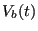
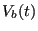

Next: Well-Tempered Metadynamics Up: Metadynamics Previous: Metadynamics
In metadynamics, a time-dependent bias potential is “grown” during the course of the simulation that acts to enhance sampling of the order parameter [48]. Rather than confining to local regions of order parameter space as in umbrella sampling, the metadynamics potential pushes the system away from easily sampled regions of order parameter space. This bias can be expressed:
NAMD includes native support for metadynamics using the colvars module. By default, kernels are deposited every 1,000 steps. To illustrate metadynamics, we return to the system of a single molecule of butane, this time at 273 K. It requires a 100-million time-step MD simulation to generate a smooth histogram for the C1-C4 distance at this temperature. Fig. 46 shows the free energy vs C1-C4 distance computed using a 10-million time-step metadynamics simulation for which  = 0.1 kcal/mol, and
= 0.1 kcal/mol, and  = 0.1 Å. We see excellent reconstruction of the true free energy at a much lower computational cost with metadynamics.
= 0.1 Å. We see excellent reconstruction of the true free energy at a much lower computational cost with metadynamics.
|
|
This 10 -time-step metadynamics simulation deposited 10,000 Gaussian kernels in total. Generally, it is most efficient for the simulation to keep track of the bias potential on a grid rather than as an explicit sum of Gaussians. Here, the order-parameter line was divided into increments of 0.02 Å between 1.5 and 5.5 Å, or roughly 400 points. Fig. 47 shows the evolution of the bias potential  from this simulation.
-time-step metadynamics simulation deposited 10,000 Gaussian kernels in total. Generally, it is most efficient for the simulation to keep track of the bias potential on a grid rather than as an explicit sum of Gaussians. Here, the order-parameter line was divided into increments of 0.02 Å between 1.5 and 5.5 Å, or roughly 400 points. Fig. 47 shows the evolution of the bias potential  from this simulation.
|
|
The accuracy of metadynamics is fairly sensitive to  and
and  . Fig.
. Fig. ![[*]](crossref.png) shows free energies for the butane system at 273 K computing using metadynamics (and the long MD for reference) using various combinations of
shows free energies for the butane system at 273 K computing using metadynamics (and the long MD for reference) using various combinations of  and
and  , all for 10
, all for 10 steps. Among those considered, it appears
steps. Among those considered, it appears  = 0.1 kcal/mol, and
= 0.1 kcal/mol, and  = 0.1 Å are the best choices. Generally, smaller
= 0.1 Å are the best choices. Generally, smaller  will yield more accurate free energies, but at larger computational cost.
will yield more accurate free energies, but at larger computational cost.
cfa22@drexel.edu